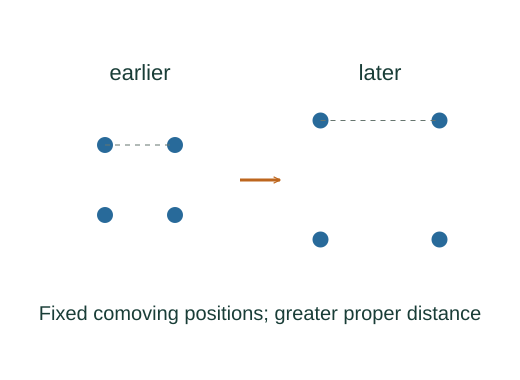

Connect expansion, redshift and Hubble’s law
In an expanding homogeneous universe, freely propagating light stretches with the cosmic scale factor. For nearby sources the resulting small redshift is approximately proportional to distance.
What the symbols mean
a(t): cosmic scale factor; z: redshift; H = ȧ/a: Hubble parameter; d: proper distance at a common cosmic time; c: vacuum light speed.
When this applies
Homogeneous expanding cosmological model and comoving sources for the scale-factor relation. The linear redshift–distance approximation is restricted to small z and negligible peculiar velocities.
Developing the argument

Define redshift from wavelengths
Compare a spectral line’s observed wavelength to its rest-frame emitted wavelength. Redshift is dimensionless.
Supply the cosmological propagation result
In the homogeneous expansion model, the wavelength of a freely propagating photon scales with a(t). This is a general-relativistic model result, not a derivation from the ordinary sound Doppler formula.
Differentiate a comoving separation
Two comoving locations have fixed coordinate separation χ and proper distance d = aχ at a given cosmic time. Its rate is ȧχ = Hd.
Take the nearby, short-lookback limit
For small redshift the expansion rate changes little while the light travels. Using lookback time about d/c gives z ≈ H₀d/c and the local Hubble relation.
A worked example
If a model uses H₀ = 70 km/s/Mpc, a nearby source at 10 Mpc has Hubble recession speed about 700 km/s and small expansion redshift about 0.0023. This is an illustrative parameter, not a claimed current measurement.
Derivation behind this calculation ↗A point to keep straight
At large redshift, cz is not a general recession-speed formula and distance depends on the cosmological model. Local gravitationally bound systems do not simply expand with a(t).
Check the assumptions and derivation ↗